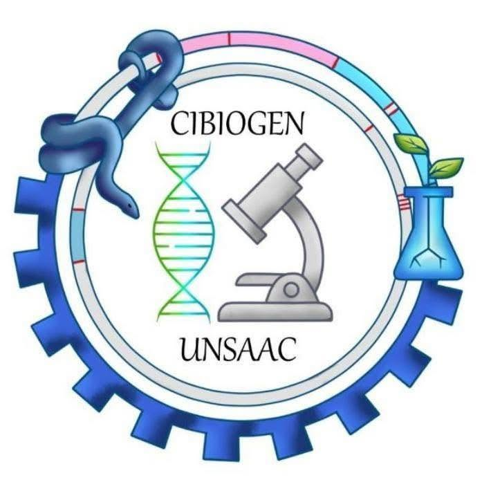
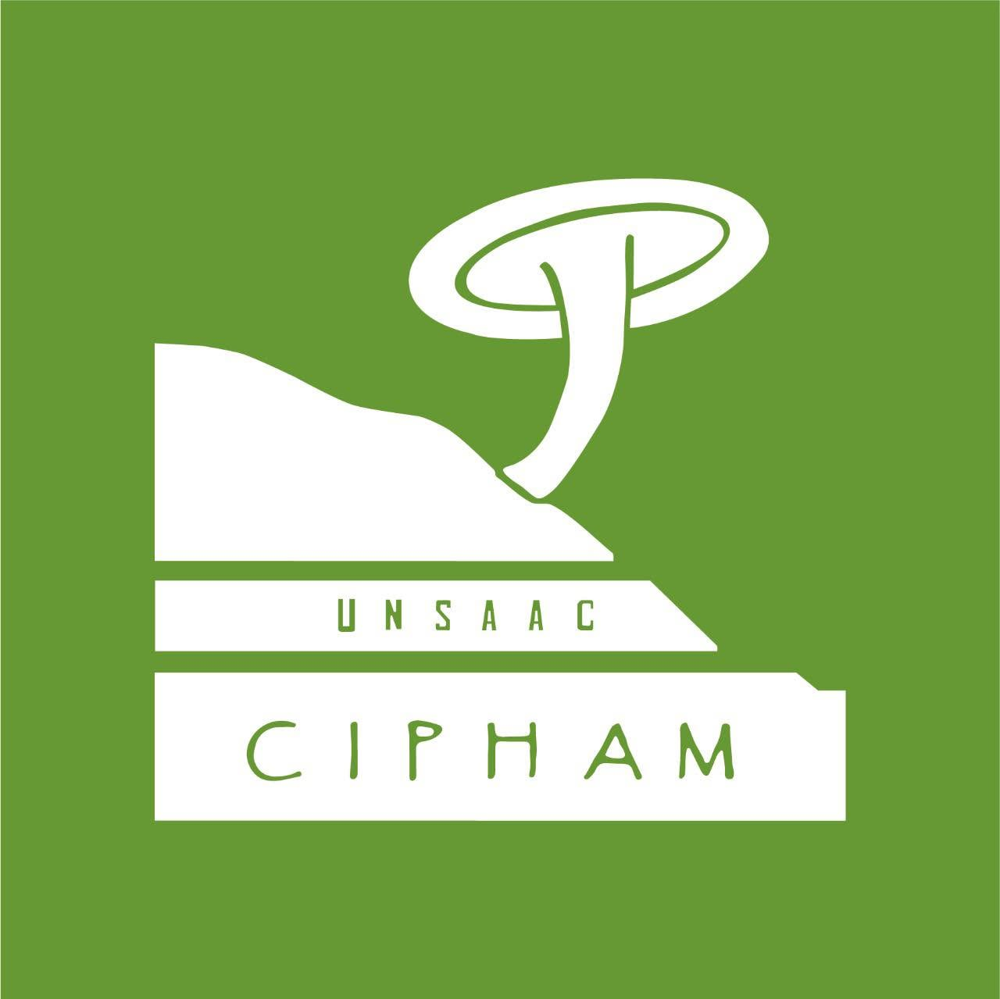
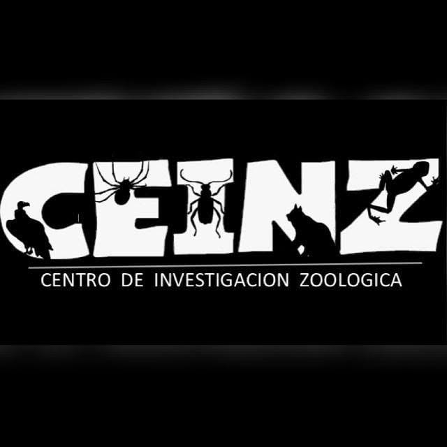
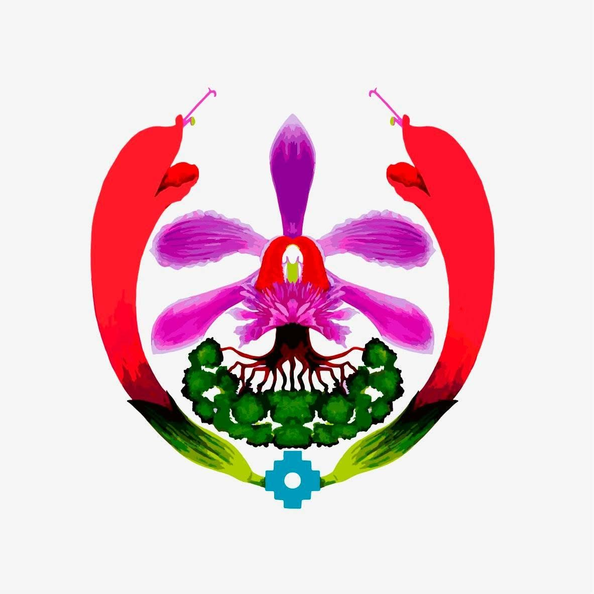
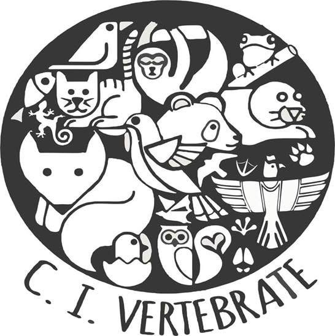
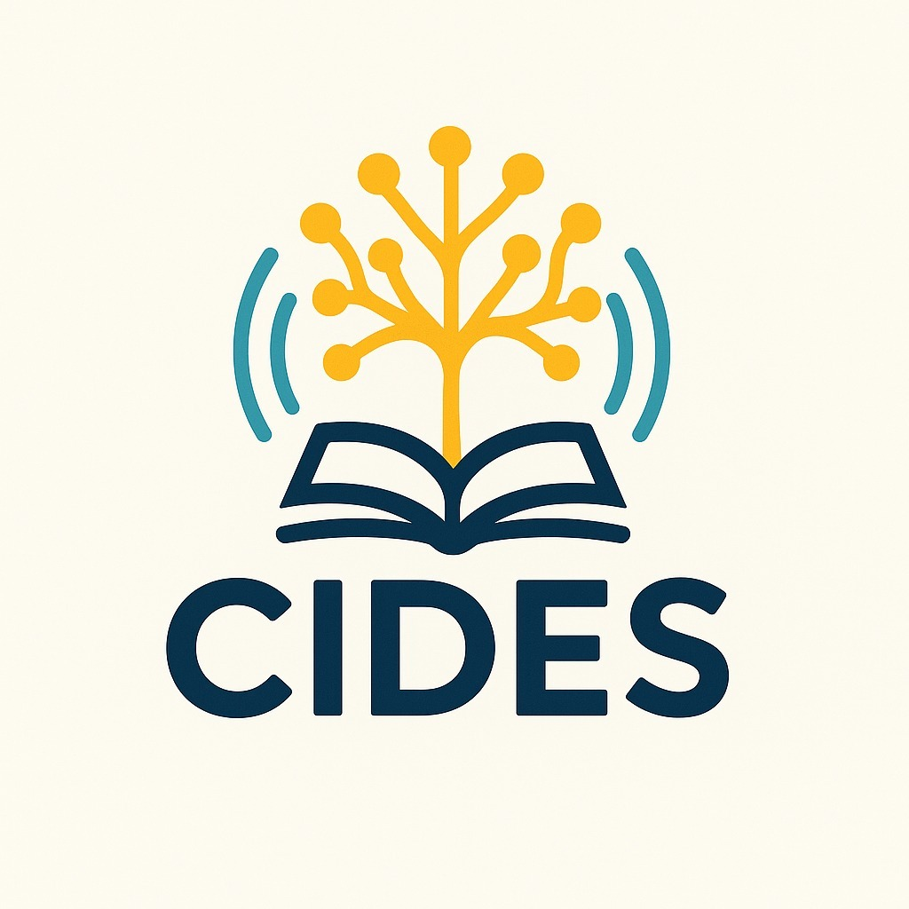
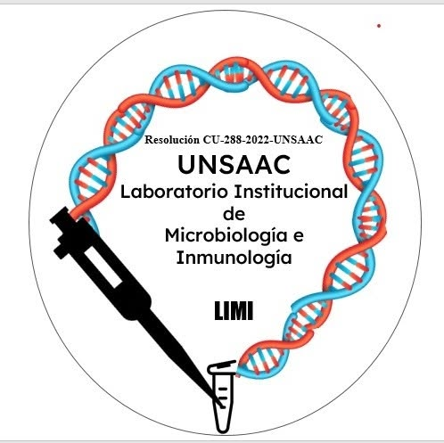
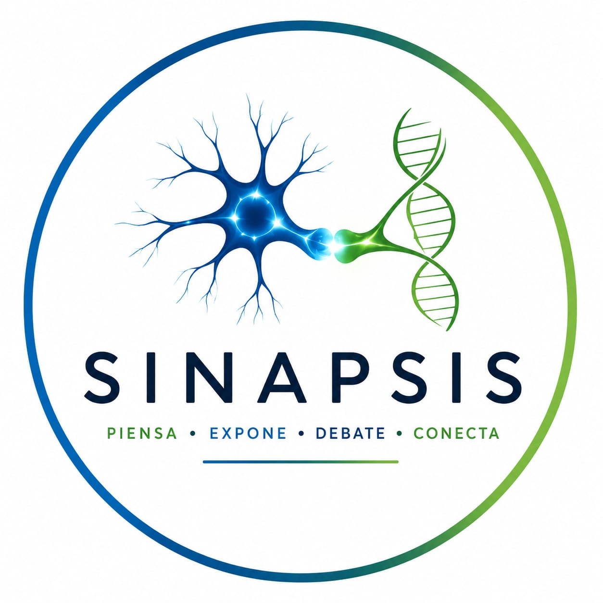
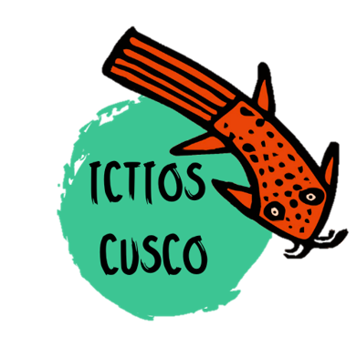

Investigación
La ciencia se construye con pasión, dedicación y trabajo en equipo.
Centros de investigación, laboratorio y círculos de estudio que impulsan la ciencia en nuestra facultad
Investigación en biodiversidad, genética de poblaciones y biología molecular de especies andinas.


Investigación en micología, cultivo de hongos, toxicología micológica y aprovechamiento sostenible de recursos funginos.
Estudios sobre conservación, impacto ambiental, gestión de residuos y desarrollo sostenible en la región.

Estudios zoológicos, taxonomía, ecología y conservación de fauna silvestre. Líder en taxidermia y crianza de especies.
Investigación en manejo y aprovechamiento sostenible de recursos naturales de la región.


Estudios sobre fauna vertebrada, ecología, comportamiento y conservación de mamíferos, aves, reptiles y anfibios.
Grupo de Divulgación Científica que acerca la ciencia a la sociedad mediante experiencias educativas, talleres vivenciales y actividades interactivas impartidas por especialistas en diversas áreas del conocimiento.


Espacio de debates y charlas sobre diversos temas de biología y ciencias. Rotación de temas de interés general.


Centro juvenil dedicado a la investigación de peces de agua dulce en la región Cusco. Cuenta con apoyo de la facultad y sus miembros.